Contexture: Runtime Context Eviction for High-Throughput Agent Serving
本文考察怎样用工具输出的语义替代关系与共享 KV 池的运行状态，决定 Agent 什么时候可以送更短的上下文。第一作者 Colin Hong 来自南洋理工大学，合作者来自 A*STAR、Microsoft 与 SuperMem。v1 于北京时间 11 月 20 日提交，11 月 23 日列入 arXiv 公告。当前按 arXiv 预印本阅读，本轮未核验到独立代码。arXiv:2611.26980
工具型 Agent 每轮重送越来越长的执行历史，共享显存里累积的 KV 需求会限制整组会话的完成速率。现有删历史策略欠缺全局缓存驻留信息，而推理服务端的 KV 管理通常看不到工具执行如何使旧证据过时。
1. 背景和问题
1.1 并发会话与 KV 容量墙
Agent 发出一次模型请求后，执行返回中的读文件、测试或运行命令，取得结果再组成下一次请求。作者把模型请求及随后一轮工具执行称为一轮，将完成某个任务的多轮组合称为会话。随着执行推进，原任务、先前推理、调用和结果通常继续留在逻辑历史。两轮之间有很长共同前缀，服务器可复用仍驻留的 KV，只计算此次新增部分。这个复用依赖前面实际 token 序列一致以及对应状态仍留在池里。不同会话各自调用工具，服务器却使用同一个 KV 池承接其中许多暂时空闲的前缀和正在运行的请求。某个会话未出现在当前模型批次，不代表它重新进来时没有状态需求。长期压测要同时看在途请求、工具间隔和再次进入，而单次短请求压测没有这一段回路。
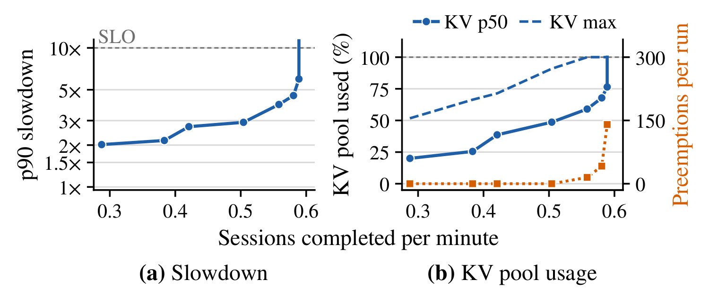
左半图横轴是每分钟完成会话数，纵轴是相对每条任务自身空载基线的会话时长倍数所取的第九十分位。右半图在同一横轴上给出池占用中位和最高值，橙色的右轴另计一轮测量中的请求抢占数。Hermes 在 TB2.1 的 Qwen 密集模型回放中，首次池满出现在约每分钟零点五六个会话，峰值约零点五九，原文报告该点延缓约六倍。继续提高到达压力时，曲线在接近固定的完成速率上迅速抬头，与抢占数升至每轮测量一百四十次相伴。任务窗口内尚未完成的会话不会贡献吞吐，已到达会话的增加与图上的横坐标扩张并不同步。作者进一步在同一 H200 把池从一百五十万 token 缩到一百万和七十六万，测到峰值每分钟零点四五与零点三五。单机容量对照让相关性更有说服力，也提示做线上替换前宜检查当前是否确在抢占和再计算主导的区域。图反映一个固定任务与工具时延构成的饱和点，不能把这组绝对速率外推至其他短请求或多卡实例。
缓存占用和执行代价之间仍有一层时序。工具执行时会话不需要新 token，却有可能继续占着能省掉下一轮预填充的旧块。管理器在压力下回收闲置块，如果运行中的会话拿不到新增预算也可能发生抢占。被抢占或回到未命中缓存的前缀需要再次计算部分状态，进一步挤占当前批次的执行预算。即使单个会话的逻辑历史远小于模型最大上下文，并发数量与增长阶段的叠加仍可使池容量成为硬约束。这里既要控制新一轮需要多少块，也要避免为了省很少块而使大量即将复用的状态失效。
1.2 单会话压缩为何跟不上池压力
常见的压缩分成三个位置。harness 能在历史里替换旧消息，按长度启动摘要，以模型判断删减，或定期掩蔽旧工具观察。模型内部可根据注意力或学习信号选择保留 KV，但通常需要读取模型内部状态或专门适配。运行时可保留、逐出和卸载已经算过的块，只要 prompt 没缩短，下一轮逻辑上仍要访问它们。压缩骨架与缓存管理控制不同对象。论文的初始切片比较了较早摘要、附加模型反思和保留缓存，随后逐个分析全局压力和额外请求。
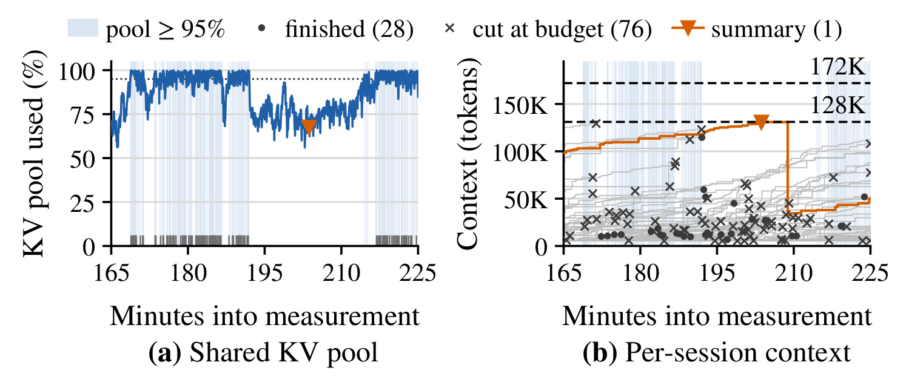
左图和右图覆盖同一小时，横轴是测量已过去的分钟。左边看共享池占用，淡色纵带表示到过百分之九十五，右边用多条线追踪各会话的上下文 token，虚线给出十二万八千的测试触发与十七万两千的默认参照。灰叉是预算内未正常结束，点是已完成，橙色倒三角是唯一摘要。到达率每分钟一点六个会话，左图存在约二十分钟的高占用窗口，右边多数会话仍各自不到阈值。橙色摘要出现时，占用已回落至百分之六十八。它把单会话长度与共享饱和在时间上错开的事实直接画出来，也说明即便把阈值降到默认以下，触发时序也未必吻合。这只是一小时的可核查切片，不能据此估计任何系统的典型压缩触发率。实际服务可以用同样的时间对齐方式复盘池占用和每个工作会话是否受到摘要、超时或抢占影响，才知道更早减预算有没有机会转成多完成会话。
摘要本身也会排队。论文的记录中一次摘要使对应会话暂停的中位数为九十一秒，AgentDiet 的一次反思调用中位数十一秒，在中位会话里约六成 Agent 请求前触发。构成差别意味着把一次调用的中位数简单相加不能推得完整轨迹成本。作者还给出一个文件被删后重新读取的例子。在同一任务的三条执行中，压缩方案一次失败，累计生成的历史比无淘汰多约四成；AgentDiet 那条完成但总历史仍略增。它提供了一种真实可出现的反馈路径，未给出这一现象的总体出现概率。
1.3 语义替代的机会与代价
同一文件后来读到的新版本，或一次成功重跑覆盖掉同一个先前失败测试，都提供了旧输出可能失去作用的线索。只要该轮还有任何可用的其他输出，工具调用和推理仍可能保留。这种线索可以利用聊天请求中已有结构取得，避免增加模型判断调用。它与无差别保留固定数目的最近输出不同，能让仍被引用且未出现替代证据的老消息继续存在。同时，目标字符串相同并不证明信息完全冗余。作者的实证因此将能够标记的范围、何时提交和提交后任务质量分别验证。
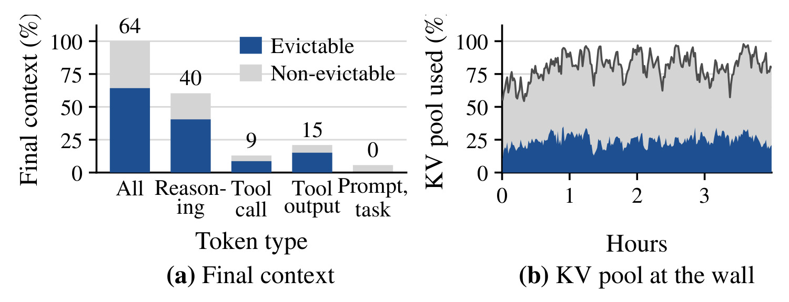
左图的分母是记录中会话结束时的全部历史 token。全部候选占六十四个百分点，其中四十点来自关联推理，九点来自工具调用，十五点来自工具结果，任务与系统提示零点。这几个类别共用总历史分母，因此可相加为六十四，不能把每列标签解释成该类内部的删除率。右图用小时为横轴，将无淘汰的一次峰值运行中可归因到在途请求的候选按池总容量画成蓝区。在占用至少九成五时，论文估算对应候选约池容量三成。此估算分母与左图不同，也未模拟每个候选已经通过宽限期、压力判断和前缀代价限制。六十四只能描述标记空间，不能从中直接推出实际 prompt 缩短比例或物理显存立即回收数量。另一个容易混淆的数是规则可分类的工具输出 token 比例，Hermes 为八成四，OpenClaw 为八成三，分类覆盖本身还需要出现替代事件才能变成候选。核验阶段应输出两个不同的事件时间。首次发现新操作只记候选时间，真正移除另记随后的调度时间。若将二者合并，会高估压力下降与材料缩短的一致性。
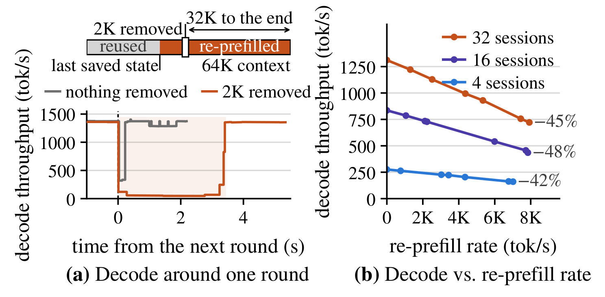
左图是在一台 H100 上针对一个请求的控制实验。原前缀有六万四千 token，删去两千，切点后到末尾仍约三万两千，并且混合模型实际可恢复的循环状态还可能在切点之前。橙线描述删除后的整个并发解码吞吐，三十二个在解码的会话短时间几乎停止，灰线的无删基线则更快恢复。右图横轴换成再预填速度，纵轴仍为解码 token 每秒，多个并发数下高回填速率对应约四成二至四成八的下降。这里的减少量看删除跨度，计算代价却取决于最早切点后的仍驻留状态和模型快照位置。两者差一个数量级时，上游看到的 prompt 长度只略缩短，邻接请求反而可能经历明显停顿。这是机制微基准，颜色之间的百分比对应曲线两端而非整场服务节省，也没有测每条 Agent 会话的最终任务成功率。服务中需要追到共同批次与首切点，才能知道影响是否集中到少量会话或者扩散到其他租户。
2. 方法
2.1 请求数据流与替代追踪
输入仍是带会话标识的完整对话。原型在 vLLM 聊天模板渲染之后、调度之前接入；记录工具操作时读请求的消息结构，做切除时在渲染过的 token 序列上确认位置。跟踪器从工具名称、参数和返回状态抽取操作类型、目标和结果。后来的文件读取或编辑会使相同目标的旧观察进入候选，相同规范化命令的重跑也可替代旧结果；构建和运行需要检查目标重叠。先前失败记录的处理更保守，测试必须由同一测试的成功重跑替代。若一个助手轮次有多个工具动作，全部输出都被替代后，该轮工具调用及附带推理才成为可删候选。对未映射的工具，论文给出保守回退原则，原型实测规则只有沙箱与文件工具，外部服务和 MCP 未进入该实现覆盖。系统提示和任务说明常驻，其余候选一般要经过两轮宽限。
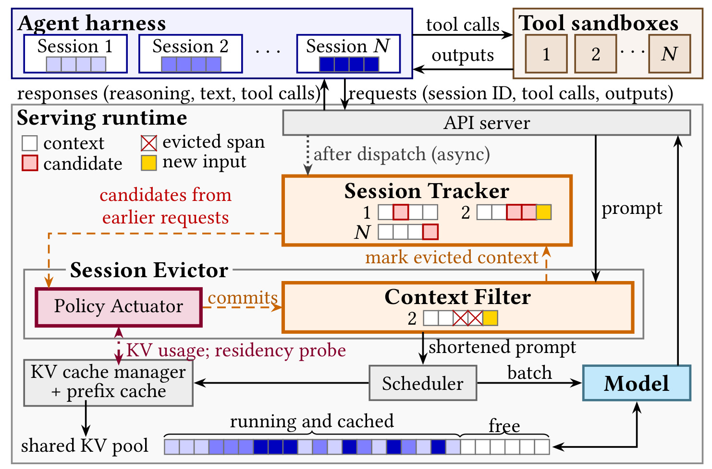
图的最上层是各个会话自己的 Agent 与工具环境，工具输出仍回到原 harness，不交给模型运行进程持久改写。API 收到完整请求后向右送下待处理 prompt，同时由分派后的异步支路把新消息交给追踪器。红边方块是已被发现的删除候选，仍可以出现在模型输入；黄色是这次新增内容。追踪器把此前确认的候选交给策略执行器，执行器再向底部共享池拿运行中使用量和本会话前缀驻留。只有收到提交指示，过滤器才把相应方块变为红叉，从本次及未来模型输入排除。模型取到的短 prompt 仍交给同一个调度器和同一种 KV 分配逻辑，图上的蓝白池说明资源跨会话共享；虚线表示控制信息，不是第二套 KV 或第二个模型。因果顺序值得注意。平常当前请求利用更早轮次的结果，追踪当次消息可以放在分派后运行，所以读到了新工具输出并不会在所有请求上增加同步等待。当首轮没有快照或历史发生改动时，跟踪才要先确认。该结构把语义状态、前缀缓存和会话标识三个必要输入接在一起，也交代了实际移植仍需适配聊天模板和工具参数。所谓无需修改模型计算，不能推成部署脚本零改动。现有前缀语义可能随 Chat Template 更新变化，Tracking State 的持久方式、横向路由及会话重试行为也要随应用设计。过滤器输出的请求利用原引擎哈希逐块查找前缀，这一点有助于理解图中为什么没有一个供删后状态直接拼接的支路。运行时只把经过过滤后的序列交出去，已有缓存能否继续命中仍依照与其他推理请求相同的块管理条件。
跟踪器确定某条消息的 token 区间时，以同一聊天模板再次渲染但将目标消息内容留空。比较两次序列得到代表该内容的变化窗口，工具响应的模板标志仍在。位置可能来自上一轮 prompt，过滤器仅当新请求的前缀在该区间末尾之前仍匹配时应用记录的跨度；若发现不一致则等待重新跟踪。做前缀确认可避免交错工具、改写消息和渲染差异使旧坐标指到后来另一段内容。宽限期是请求轮数，与角色数、时间秒数或新增 token 数没有固定换算。它给任务一个机会用到刚取回的信息，例如新编辑覆盖了上一轮观察，但下一轮仍会依据旧结果检查修改是否达到了原目标。即便某个输出的值完全被覆盖，它与后来选择的连接可能仍对模型有帮助，因而此处是一种受约束的近似语义选择。
2.2 冷提交、压力提交与回填
论文用文字定义候选准入而没有编号化的训练目标。下式按原规则整理出可复核的记号。对一个会话，把过宽限窗口的候选合成同一批。若一个跨度已经从先前输入移除，下次过滤继续尊重既有提交，避免反复加入并打散缓存前缀。这里考虑的是当前尚待提交的合批。用 token 为单位时，前缀探针提供共享缓存内连续、可复用的前缀长度，最早准备删除的位置决定后缀中哪些已缓存 token 将不再复用。
符号解释。 $P$ 是运行请求占用率，分子只计正在运行所持有的块；$B_{\mathrm{pool}}$ 为总池块数，可回收的空闲历史缓存不进入分子。$S_i$ 为已经确定合并的不重叠待删跨度，$a_i$ 是其起点，$a$ 与 $L_{\mathrm{resident}}$ 在当前待过滤前缀的相同坐标系中计数。$G$ 是理论缩短的 token 数，$C$ 是为此失效的已驻留 token 数，不能直接当测得的毫秒。把首切点后若干段合批可提高 $G$ 而不一定提高 $C$，改为把某一段提前到首切点之前则可能使代价上升。对于有线性注意力的模型，循环状态仅按部分块边界保存，回填可能从更早的已保存点启动。因此热提交的 $C$ 在这类模型上只是重算下界，而缓存已经在切点之前结束时，冷提交仍未牺牲已命中的后段状态。
符号解释。 正常情况下，冷批次不等压力，热批次要等共享池达到作者的可配置门槛，同时预估回填比不超过上限。$\rho$ 表示允许每删一个 token 最多使多少已有驻留 token 失去复用，默认六；这是一种预算比，不是模型预测阈值。既有前缀驻留探针只读，逐块按同一引擎哈希找到当前已有 prefix cache 的边界，不在观察时新增块。空闲块稍后可能已被回收，所以判断能再保守一层；原型假设每会话最多一个在途请求，未让相同会话的另一条请求在此间扩展它的已驻留前缀。候选是跨轮累计状态，未达到提交条件时要带到后续请求再次尝试，不能将一次未提交记为永久失效。
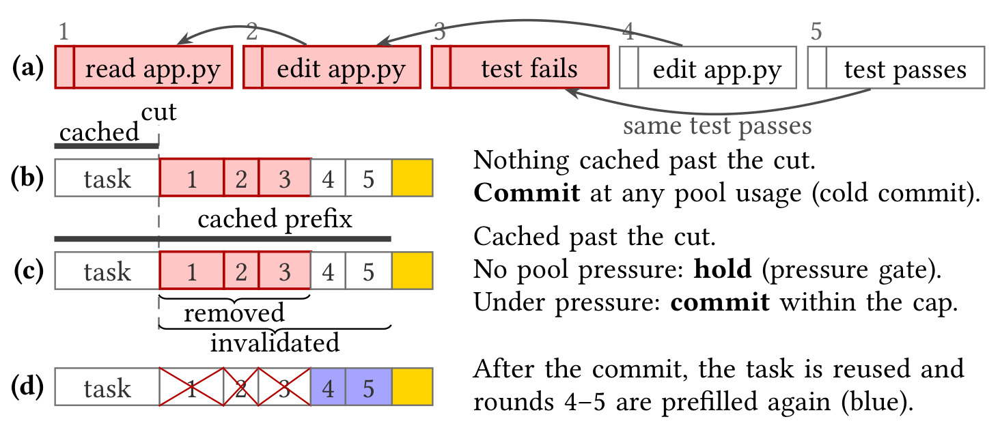
第一行用五轮读、改、测展示替代关系。后续编辑使早先读取及编辑结果过时，原失败测试在同一测试成功重跑后才进入候选；跨过宽限后，红色的一至三才构成成熟批次。第二行黑条的已驻留前缀仅到删除点，提交不会牺牲后面的缓存，故即使模型还没排满也可去掉这一组。第三行黑条跨过首删点，删除部分和使缓存失去复用的部分不同。会话四和五保留内容，但因为前面 token 已改，旧状态仍无从直接接续。第四行展示策略决策结果，任务前缀继续复用，红叉的内容跳过，蓝色保留下来的轮次重新计算，再连上黄色新输入。如果只看删掉红块的长度，就会错把蓝色回填记成零。图中保留任务不等于任意旧推理都安全删掉；一条测试结果需同一任务语义覆盖，成熟条件还要考虑后续动作。以同一例子理解策略，也可看出合并多个后部跨度的价值。一条批次已经因更早的删除让后面缓存失效，再删其中某些过时内容可不再增加无效范围。它不能保证下一步回答质量，于是吞吐门槛、准确率探针和删内容规则需各有独立证据。图的四行来自原文的同一对象，颜色区分的是候选、提交、回填和新输入四种状态。还可以从横向排布看到，同一个轮次的工具结构不需要随着下方缓存状态变化而改变。是否保留四、五轮内容是语义选择和宽限的结果，而它们是否被预填则是缓存依赖结果。两套条件在相邻面板同时作用，最终只启动一次模型请求。这里的测试仅是一个可视例子，实际宽限将随任务进程变动。
2.3 请求过滤、缓存一致性与异常处理
过滤器清空待去工具结果的内容，保留模板的工具结构标志；整个助手轮次被批准后则移去该轮。过滤发生在调度前，所以引擎看到的输入是真正变短的 token 序列。前缀利用沿用原缓存协议，保留切点前的状态，重填后半的保留内容。以后每轮渲染时继续应用旧提交记录，避免工具端重送原历史时重新引入已淘汰跨度。某个块不再被该会话引用只使其符合原框架的回收决策，并无强制立即释放。这一细节隔开了缩短逻辑输入、减少未来读流量和当前物理释放三个时点。
原型把缓存探针加进引擎的现有步骤之间，探针核心改动少于一百行，完整原型约七千行 Python。池使用量来自已有的运行统计，工具跟踪在 API 进程的主机内存里，当前单进程持有会话状态。它没有新增一条模型推理路径，也无需训练压缩决策器。若请求过滤后连同输出预算仍将越过上下文限制，论文允许将已成熟批次直接提交，绕过压力和回填上限。这条异常路径服务的是模型窗口，不能反过来证明所有日常提交都遵循同一个成本界。探针超时会暂留该批并沿用已有提交，跟踪失败则可恢复完整原上下文并从最早恢复处回填，只在仍超出窗口时拒绝。恢复完整历史的能力来自 harness 从未丢弃原本持有的历史。
移植时尤其要注意工具结果的身份与时间。文件操作能绑定同一工作目录、路径及结果；随时间变化的外部库存、用户权限和业务日志需要更强的对象版本定义。即使操作名重复，如果拥有不同租户或不同比较窗口，就不能简单当成同一个观测。这里讨论的是可恢复的执行视图，保留审计材料与模型是否看到同一段原文是两个决策。若追踪误用配置让助手忘了仍相关的早期异常，恢复完整原文的代价可能很低，也可能使整组在同一高峰重新预填。用保留记录观察错误类型比只量 token 长度更有研发价值。
3. 实验结果
3.1 平台、对照与计量
组合覆盖 Terminal-Bench 2.1、SWE-Atlas-QnA，Hermes 与 OpenClaw，以及以 FP8 权重和混合注意力运行的 Qwen3.8-27B 密集和 Qwen3.6-35B-A3B MoE。主密集模型在一台 H200，主 MoE 在一台 H100，服务端使用 vLLM 0.26。任务原始流程的 p90 上下文在十万至二十二万八千 token。跨模型比较混合了模型、硬件与任务能力，通用策略效果应在八个组合各自的同条件横向对照中读。无淘汰策略仍保留各 harness 实际必须的越窗处理。默认摘要用 harness 内建阈值，调优摘要在指定候选阈值中按空载预算内完成任务数选设置。固定遮蔽只留最近十条工具输出，AgentDiet 在同服务 GPU 调用 Agent 所用模型反思，Continuum 使用作者实现保留符合短工具延迟条件的一轮缓存两秒。默认宽限两轮、运行池压力百分之八十、重算倍率六在八个组合一致。
吞吐压测先记录每个任务与策略的执行轨迹。每一档负载用同一组泊松到达序列，保留报告中的输出规模、工具空挡与请求间隔，并用两小时预热充填共享区间。摘要和 AgentDiet 使用各自录到的路径以包含额外调用。Contexture、无淘汰、固定遮蔽和缓存保留从同一无淘汰轨迹出发，在调度时执行各方案，调度和候选提交对负载仍是动态的。固定输出让资源比较可复现，但不能捕捉删除历史让模型改变下一步、少做一项工具或多尝试几轮等反馈。
符号解释。 这些式子是计量口径整理。$T$ 计预算内完成会话除以测量分钟，提交请求数或生成 token 数都不是分子。$S_{90}$ 先按每个任务自身无淘汰空载时长取比再取分位，固定十倍运作线用来读吞吐，既不等于 p90 秒数，也不等于任务超时十倍。$E$ 对测量窗 GPU 能量读数除以完成会话数，功耗采样每秒一次。它可以随完成分母改善而下降，即便平均卡功耗变化很小。质量另外用真实模型执行与原评估器判分，不能从固定轨迹回放的输出推得。
3.2 吞吐与质量
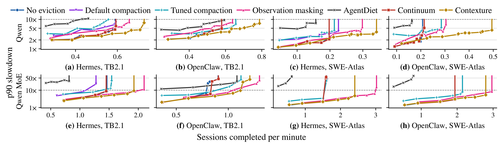
这张主图横轴是每分钟完成会话，纵轴是每条任务相对空载基准的 p90 延缓倍数，采用对数纵轴，虚线指十倍。上面四格是密集模型，下面四格是 MoE，列依次对照两种 harness 和两项任务。金色方案在每组与无淘汰、两种摘要、反思删除和保留缓存相比，在同一条 SLO 线上向右推进百分之二十至七十三。不能将这个区间写成对所有已测策略的全面击败。与粉色固定遮蔽比较，金色在八项里的五项多完成百分之七至六十三；三个 MoE 组合是粉色更快，幅度约百分之六至二十五，但需要同时看真实执行的准确率损失。在轻载测点，原文给出的 p90 延缓与无淘汰相差在百分之十以内。较激进的摘要和额外反思即使尚未遇到池满，也因同步模型调用而提高延缓。到高载，密集模型的一些蓝色曲线几乎竖起，说明再提高负载难扩大有效完成量。多画一条同截点的实际任务正确分布能避免把更多结束的会话误当成更多完成目标。图中不同面板横轴范围有别，不能用图面位移直接对比两种模型绝对吞吐。这里的服务吞吐对应固定轨迹，作者在一套 Qwen、Hermes 和 TB2.1 的三个负载下另做从头实时执行。在所测门槛上仍保留百分之十三增量；实跑相对各自回放，Contexture 的吞吐低百分之九至十三，无淘汰低百分之二至五。两组从回放到实跑的差值不同，足以说明捉住轨迹反馈的重要性。按曲线找拐点时还应保留同一工作负载的到达率，超载时一部分会话超时未进入完成计数。作者在每轮回放中统一同负载到达日程，使这个拐点可用于相同输入的系统对照。
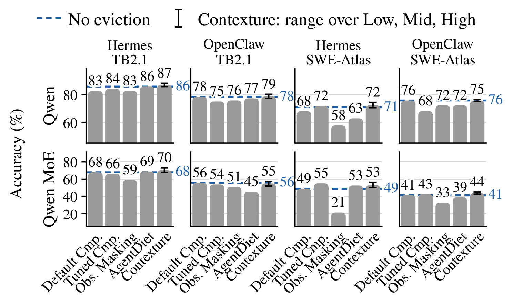
蓝虚线代表每个组合无淘汰空载的准确率。前面柱状是其他策略各自空载表现，Contexture 末柱为低、中、高负载的准确率均值，黑色范围表示三个运行档位的最小至最大。图中的黑线不是统计置信区间。探针对每个任务执行真实模型与工具，样本来自至少一次录制成功的任务，最多允许六小时，不等于所有评测任务的无条件随机样本。跨八组合和三负载相对蓝线平均高一点四个百分点，最差低三点七。观察遮蔽相对空载无淘汰在全八组下降三至二十八个百分点；其中三个更快 MoE 组取九至二十八点的损失，属于吞吐优势的条件反例。比如 MoE 配 Hermes 的 SWE-Atlas，观察遮蔽柱约二十一，蓝线约四十九，Contexture 柱约五十三。也要保留不利情形，如 MoE OpenClaw 的 TB2.1 中负载造成最大下降，高负载又回到近似无淘汰。某一租户服务里峰值请求的任务类型和长短可能不同，负载按应用选择后准确率排序也会变。这个实验展示样本上稳定性和具体风险，无法从几个百分点没有区间就确认统计上的普遍优效，也无法把基线空载的设置改写为同负载质量线上对照。以图中的紧凑标注读取差值，只能到整数百分比附近，主文平均与最差值则使用作者未取整汇总。更严格的复验宜重复运行完全相同的任务并报告配对差值，分别将策略和负载作两个变量，还需要注明超时任务如何进入正确率。对于高峰业务，短时吞吐更高仍可能因正确率降低而减少验证通过总量，这也是下文要解释通过会话率的原因。
将吞吐与任务探针读在一起时，先看预算内完成并不总代表 verifier 通过，再看固定遮蔽几个更快点是否可以接受。成本上，十倍门槛与普通产品的绝对时延 SLA 也不同。若用户等待一项实时工具通常只能容忍几十秒，采用相同框架但改用绝对秒数切点，可能落到曲线上完全不同区域。对离线代理任务则可以参考按任务时长归一化的方式，避免工具本身更慢的任务压垮平均延缓。
3.3 能耗、消融与参数
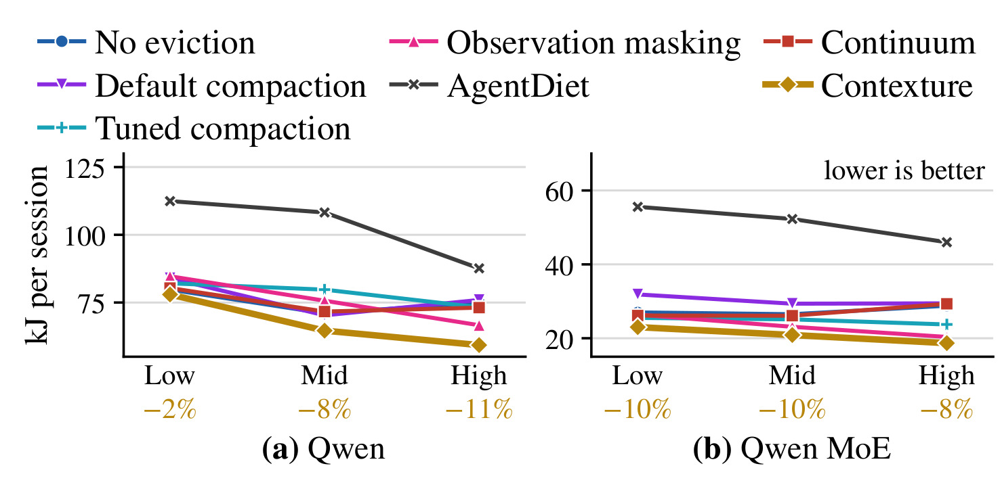
这里固定 Hermes 与 TB2.1，左面是密集模型，右面是 MoE。每个面板横轴是作者选出的低中高三档到达负载，纵轴是每完成会话所用 GPU 千焦。图中金线下的小数字对的是同面板、同负载最省 GPU 能量的对照，因此分母并非所有点都用无淘汰。密集模型三个点分别少约百分之二、八、十一，MoE 少约百分之十、十、八。反思策略有额外模型推理，故对应能耗更高。硬件、每次基准任务的起始难度与对照调优都需固定，才能把每会话成本差异归到系统策略。高负载策略在测量窗完成更多会话，能耗分母变大，而未完成和中断任务仍可能消耗功率。图给的上限适合说明比较口径下节电与吞吐可同时改善，不能当成请求端的 GPU 小时账单、机架总电量或电费比例。现有实验只报 GPU 能量，主机负责工具执行与追踪，主机 CPU 和存储开销未由该图覆盖。若负载用另一种方案的峰值设置，低中高的绝对到达率都可能换位。读图时优先锁定同一个点的对照组，再判断额外预填与完成量各贡献多少。
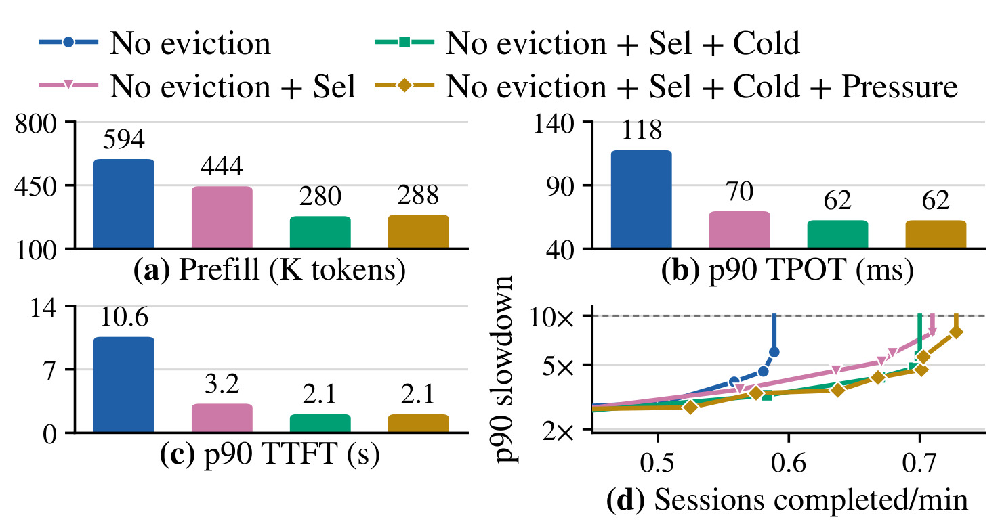
作者固定 Qwen、Hermes、TB2.1 三条高载轨迹。图上左侧是一完成会话平均预填 token，上右是每 token 的 p90 时间，下左是首 token 的 p90 时间，下右把每分钟完成数与 p90 倍数放回整体 SLO 曲线。按无淘汰、成熟即删、再加冷提交、再加压力门控顺序，预填分别为五十九点四、四十四点四、二十八和二十八点八万 token，每 token 耗时为一百一十八、七十、六十二和六十二毫秒，首 token 为十点六、三点二、二点一和二点一秒。仅选择已大幅减少抢占和未来 KV 读，毕竟立即提交也会打断热前缀；最轻载下仅选择甚至使 TTFT p90 加倍，冷提交无此差距。右下曲线中仅选择的十倍门槛吞吐改善约两成，冷提交对边界基本持平，在五倍处比仅选择约多百分之六，说明它主要改善相同吞吐的延缓。最后热提交把所删 prompt token 从二成一推到二成五、令抢占再少四分之一，尽管高载每会话预填从二十八万回升一点，峰值仍进一步提高。原文在该三轨迹消融报告整体约两成四增量，须与 Figure 10 的横跨组合结果以各自实验对照解释。前缀成本更低和压力下多完成是不同优化目的，任何一项单指标都不足以选出全天候策略。左侧三栏的证明力度也有区别。预填按完成会话归一，仍可能包含负载下发生过、随后没及时完成的执行开销，读法不同于对单请求的 P90 TPOT。当仅选择造成重算时，经过冷提交延后的热候选继续留在执行上下文，并不会凭空消失。图中的额外预算正是为了在压力高时覆盖这部分未提交跨度。工程实现应核验切点之后实际进行的回填，以及与其他正在解码的请求批次重叠程度。
符号解释。 该分组敏感性指标把门槛处的回放完成吞吐乘高负载真实探针通过比例 $A_{\mathrm{High}}$。其单位为预期通过会话每分钟，是便于比较超参的派生数。它没有逐条核对吞吐压测的每个完成会话都真实过了 verifier，需考虑回放与探针可能使用不同的任务集合。
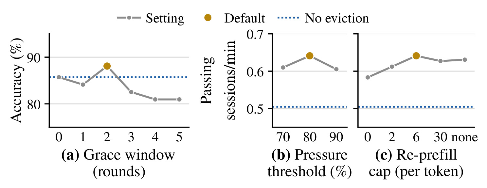
左图只改宽限轮数并读高负载准确率，两轮默认点约百分之八十八，较以空载测准的参考线高两点；短窗口落约两至四点，延长到三至五轮落约六至七点。中图横轴是运行池门槛，以预期过关会话每分钟作纵轴，八成比七成和九成多约百分之五至六，比不删约多百分之二十七。作者指出这些门槛的吞吐仅差约百分之一，差值更多来自探针准确率。右图改变回填上限，从零到不设限制呈现有限范围的折中；六的默认值在派生指标上比零多约一成，比更宽上限多约百分之二。上限为零意味着只留冷提交，说明不允许一切失效也未必对当前样本最优。三组扫描只是在同一固定组合每次独立改一个参数，并未给出新的任务、流量波峰和参数联调全局最优。准确率部分没有分组置信区间，随机生成轨迹或分布变化可能对小差值产生影响。
3.4 容量扩展、卸载与开销
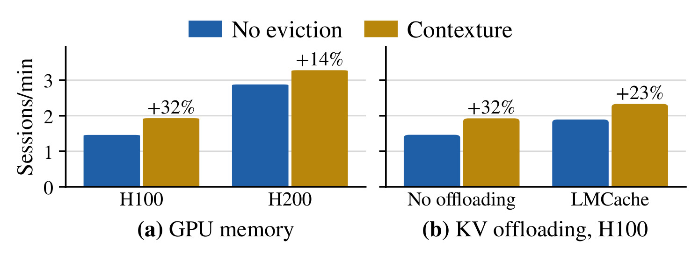
左边分组是用同一 Qwen MoE、Hermes、TB2.1 轨迹在 H100 与 H200 上对照，纵轴单位仍为 SLO 下的会话每分钟。对应池容量约一百七十五万和四百四十四万 token。无淘汰在大池已经能完成更多，金柱同卡提升从小池的三成二降到大池的一成四，符合有更大空余容量时少一些抢占可避免的预期。右边仍用 H100，把引擎分别配置为没有卸载与 LMCache 一百 GB 主机层。开启卸载的蓝柱已比未开启蓝柱高约两成九，再在开启卸载的相同设置加 Contexture，同分母高两成三。后者并非两次增量简单相加，且没有改变卸载的路径定义。主机层能保留不在 GPU 上的既有状态供之后载回，收到短 prompt 则直接降低未来请求需要搬运和读取的数据。两者主要调整不同环节，因而可以同用。固定这些卡、软件版本、内存分配和任务才有可直接复现的排序，跨环境要重查主机带宽、前缀命中与模型架构。若需要检验可组合性，可以在相同 host tier 上按仍驻留、需主机读回、已经释放三类前缀分别看延迟，避免把吞吐差解释成单一路径的提速。
请求路径内部的额外延迟中位数三十毫秒，约占中位请求时间百分之零点二。提交判断与过滤中位九毫秒，六成九的请求还等驻留探针，等待中位二十五毫秒。这些中位数来自不同条件集合，不能把它们相加期待恰为三十。探针需与引擎步骤交错，高负载加大批处理时，仍应测实际首轮或探针等待分位。作者报告每跟踪 token 占用的主机内存小于每 token GPU KV 的百分之一，单 API 进程状态在多实例切换的开销尚未测。GPU 没有额外压缩模型调用，失去缓存后再预填仍是额外计算。
4. 总结
工具动作给出了哪些状态可能被覆盖的依据，并发服务则决定什么时候把它们从模型输入移走。Contexture 让这些局部判断接上共享池占用与首切点缓存驻留，吞吐回放、真实任务探针和单组全程实时结果共同说明何时这种接法有价值。即便语义判断认为可以删，原有引擎仍会用自己的缓存分配和回收方式，从而避免误把短输入等同于立刻获得自由显存。真正实现可落在运行缓存的阻塞和抢占变少，而模型架构变化额外影响前缀恢复位置，以及读带宽释放能有多少。
边界。 第一，主吞吐曲线固定生成轨迹，只有一个工作负载补做全程实跑；工具错误、策略改变后重试次数和规模仍可改变真实吞吐。第二，质量探针在可解轨迹挑任务，基线空载、Contexture 跨三档负载，极差不是统计区间；已有最差点说明不能宣称普遍等质量。第三，工具规则覆盖沙箱与文件，读同一目标并不保证旧内容对解释历史决策无价值；外部服务、跨会话或多租户状态没有实证。第四，当前追踪状态在单 API 进程，服务重启、请求路由、执行进度恢复或池压力视图不一致需要独立验收。第五，硬件和混合注意力同时影响重算；能效只测 GPU，绝对吞吐和时间不宜迁移到其他 GPU 或业务 SLA。长期记忆的相关性也不能仅用后来操作是否覆盖对象来定义。
在推荐与搜索链路，若长会话助手反复读同一商品版本或调试同一检索快照，可先借鉴其候选、提交和物理回收的三时点记录。对曝光、点击或历史反馈等独立事件，新的事件不覆盖旧事件，广义的工具类别相同也不足以支持清除。定界失败时让原始历史一直可追溯，模型才有可能用同一会话恢复。这条边界还提醒关注分桶。高频调用不是唯一候选，长尾对失败多轮排查时先前返回的信息也可能是关键证据。保住候选池、服务延迟与任务质量的对照才能逐步测试。
后续核验。 一，在自己的回放先锁定任务预算、生成规模、工具间隔和各负载到达序列，再与关键负载中完全实时轨迹的动作变化相对照。二，日志要同时记已替代、已成熟、已提交、首切点、失驻留、回填和抢占，分开核验少请求、快请求与多完成。三，从只冷提交开始与完整门控对照，按前缀长度、租户、混合层状态快照切分重算与 p99。四，外部工具上先定义对象版本与替代证据，挑高风险同名异物场景，以回放和原会话重建检查错误率。五，如果要与 LMCache 或其他分层系统配合，增加不同主机带宽和剩余槽位的压测，并记录按成功任务计的全系统能量。